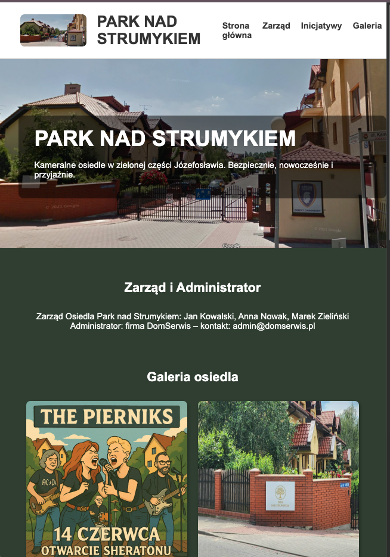

Park Nad Strumykiem to nowoczesne, przyjazne i kameralne osiedle zlokalizowane w zielonej części Józefosławia, otoczone spokojem i zielenią. Miejsce to powstało z myślą o rodzinach, które cenią sobie bezpieczeństwo, estetykę oraz sąsiedzką atmosferę. Otoczony drzewami i pobliskim strumykiem teren zapewnia mieszkańcom ciszę, świeże powietrze i wyjątkową możliwość relaksu w codziennym życiu.
Osiedle składa się z kilkunastu nowoczesnych budynków, zaprojektowanych z dbałością o szczegóły, harmonię architektoniczną oraz funkcjonalność mieszkań. Do dyspozycji mieszkańców są również tereny zielone, place zabaw, przestrzenie wspólne sprzyjające integracji oraz pełna infrastruktura drogowa i oświetleniowa. Na osiedlu panuje wyjątkowa atmosfera współpracy i życzliwości. Sąsiedzi organizują wspólne inicjatywy, takie jak pikniki, śniadania na trawie, akcje sąsiedzkiej pomocy czy wydarzenia dla dzieci. Wspólnota mieszkańców jest aktywna, a Zarząd i Administrator regularnie angażują się w rozwój i utrzymanie wysokich standardów zamieszkania. Lokalizacja osiedla pozwala na szybki dostęp do szkoły, przedszkola, sklepów, restauracji oraz terenów rekreacyjnych. Mimo bliskości miasta, mieszkańcy czują się jak w enklawie – oddzieleni od miejskiego zgiełku, a jednocześnie z dogodnym dojazdem do Warszawy i Piaseczna. To miejsce stworzone z myślą o wygodzie i jakości życia.
Dzięki zaangażowaniu mieszkańców oraz transparentności działań zarządczych, Park Nad Strumykiem jest wzorem dobrze funkcjonującej wspólnoty mieszkaniowej. Jeśli szukasz spokojnej, zadbanej przestrzeni dla swojej rodziny, z serdecznymi sąsiadami i przyjazną atmosferą – to właśnie tutaj znajdziesz swój dom. Administratorem osiedla Park Nad Strumykiem jest firma House Management, profesjonalny zarządca nieruchomości z wieloletnim doświadczeniem.
Administrator - Marek Szczepanik: email: marekszczepanik@hm.waw.pl, tel. 790 488 066
Rozliczenia - Karina Krawczykowska: email: karinakrawczykowska@hm.waw.pl
W skład Zarządu wchodzą mieszkańcy wybrani na Walnym Zebraniu. W sprawach osiedla możesz kontaktować się z Zarządem mailowo:
zarzad@parknadstrumykiem.org
Osiedle objęte jest całodobową ochroną firmy Juwentus. Obiekt wyposażony jest w nowoczesny system wizyjny, zdalną recepcję oraz monitoring LPR, który automatycznie zarządza ruchem pojazdów na terenie osiedla.